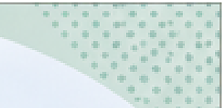
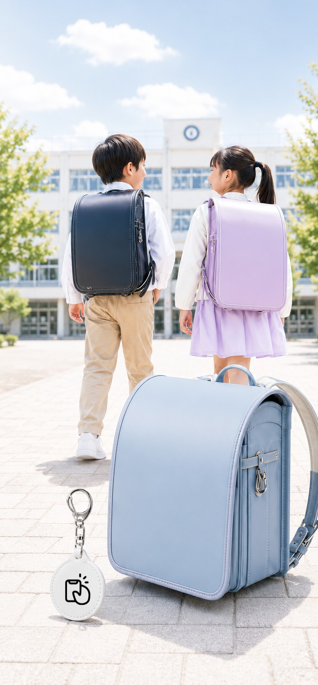
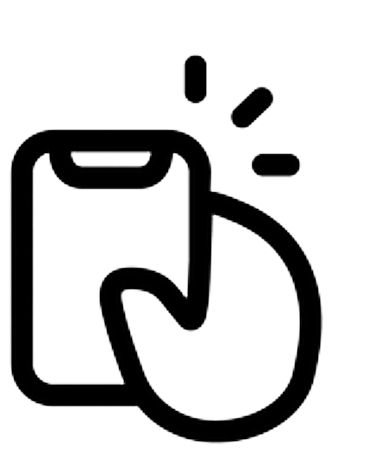
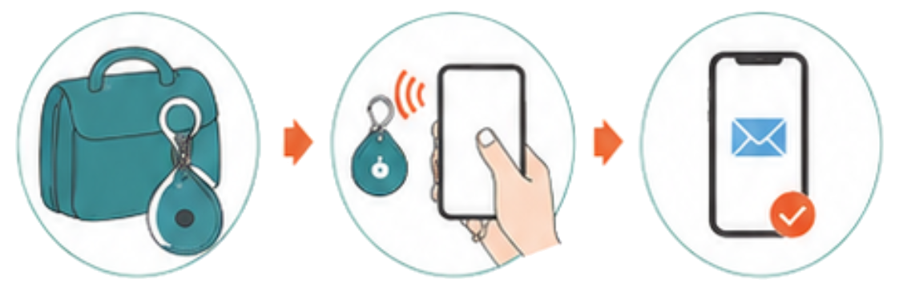
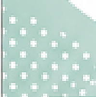
学校法人・教育関係者様へ
迷子・忘れ物解決
ICタグ/システム
児童に持たせる
安心
のお守り。
迷子・忘れ物対策を、個人情報を守りながら、
もっとスムーズに。
このサービスは、ICタグとスマートフォンを
活用した迷子・忘れ物解決システムです。
キーホルダーやランドセルカバーなどにICタグを内蔵し、
園児・児童一人ひとりに“もしもの時の連絡手段”を
持たせることができます。
発見者は、スマートフォンをICタグにかざすだけで
持ち主・保護者と匿名で連絡ができるため、
氏名・電話番号・住所などの個人情報を
外側に表示する必要がありません。
発見
スマホでかざす
匿名で連絡
＼ 園・学校全体で取り組む、安心の仕組み。 ／
全校配布
入学記念品
ランドセル
カバー
通学
キーホルダー
忘れ物対策
迷子対策
個人情報保護
保護者への
安心提供
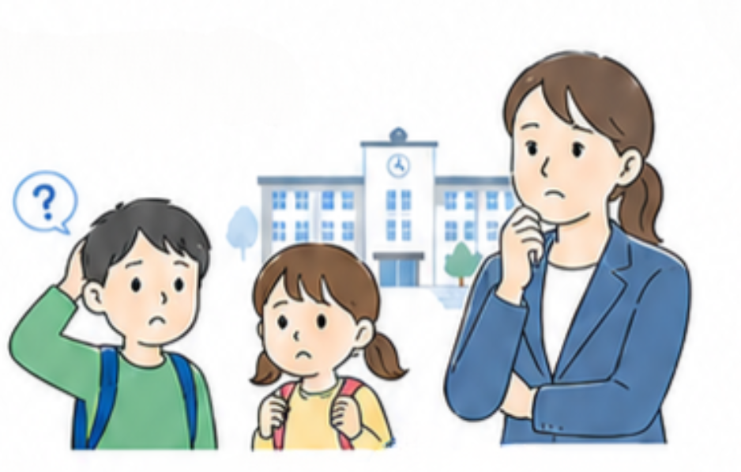
教育現場の課題
園児・児童の迷子・忘れ物対応で、
こんなお悩みはありませんか？
日々の生活や通園・通学の中で、迷子や忘れ物は誰にでも起こりうること。
しかし、現場では多くの時間と手間が取られています。
教育現場の課題
園児・生徒の安全に
関する不安
忘れ物対応の
負担が大きい
先生方の業務負担
が増えている
● 迷子になったときの迅速な
連絡手段がない
● 園外活動や通園・通学時の
安全確保が課題
● 個人情報の取り扱いに配慮が必要
● 忘れ物の問い合わせが
日常的に発生
● 持ち主の特定や連絡に
時間がかかる
● 保管・管理の手間や
スペースの確保も必要
● 迷子や忘れ物対応に
多くの時間を取られる
● 保護者への連絡や確認作業が
煩雑に
● 本来の活動に集中する時間が
削られてしまう
よくある迷子・忘れ物の例
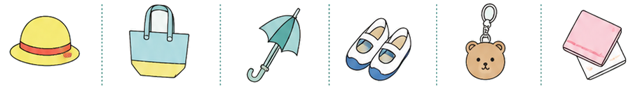
帽子・上着
バッグ・水筒
傘・レインコート
上履き・靴
キーホルダー・
チャーム
ハンカチ・タオル
教育現場で求められること
園児・生徒の安全を
最優先に守ること
先生方の業務負担を
軽減すること
先生・保護者の負担を
減らせること
迅速かつ確実に保護者へ
つなげられる仕組みが必要です。
効率的な対応で、
先生方の負担を減らすことが
求められています。
安心して預けられる環境づくりと、
保護者との信頼関係の構築が
大切です。
＼迷子・忘れ物解決ＩＣタグは、これらの課題を解決します！／
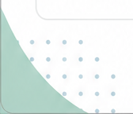
本サービスの仕組み
ICタグをかざすだけ。
個人情報を出さずに、持ち主・保護者へつながります。
『本サービス』は、ICタグとスマートフォンを
連動させ、迷子や忘れ物を見つけた人と、
持ち主・保護者を匿名でつなぐ仕組みです。
ICタグはキーホルダーやランドセルカバーの
内側に封入でき、外側には個人情報を
表示せずに運用できます。
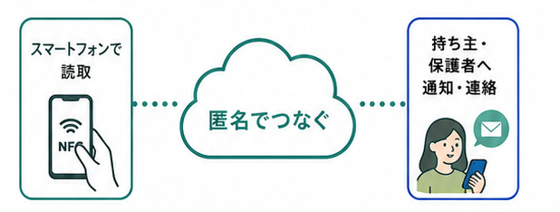
スマートフォンで
読取
匿名でつなぐ
持ち主・
保護者へ
通知・連絡
1
2
3
4
教育機関から
園児・児童へ配布
発見者が
スマートフォンを
かざす
持ち主・保護者へ
つながる
匿名で
連絡・返却調整
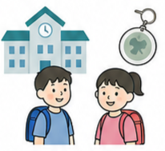
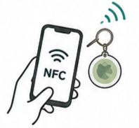
ICタグを内蔵した
キーホルダーやランドセルカバー
を配布します。
NFC対応スマートフォンで
ICタグを読み取ります。
タグ情報をもとに、
登録された連絡先へ
通知します。
個人情報を公開せずに、
受け渡しのやり取りが
できます。
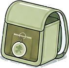
外側には個人情報を表示しません。
ICタグは内側に封入できるため、見た目はすっきり、安全に運用できます。
教育機関にとってのメリット
園児・児童の
安全を高める
保護者への
安心感を提供
先生の業務負担を
軽減
迷子や忘れ物の
発生時に、スムーズな
連絡につながります。
個人情報を守りながら
運用できるため、
安心して案内できます。
確認・連絡・返却対応の
効率化につながります。
全校配布しやすい、安心・安全の新しい仕組みです。
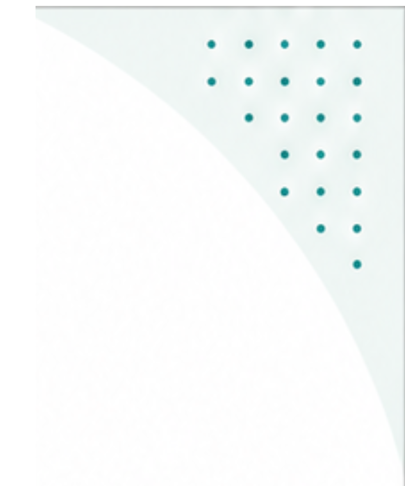
活用シーン・導入イメージ
全園児・全校児童への配布で、
幼稚園・学校全体の安心・安全対策に。
本サービスは、園児・児童一人ひとりの安心を高めるだけでなく、先生の業務負担軽減や、
保護者への安心提供にもつながります。全園・全校配布することで、幼稚園・学校全体としての
安全対策を見える化でき、防犯・見守り・DX推進の取り組みとしても活用できます。
活用シーン
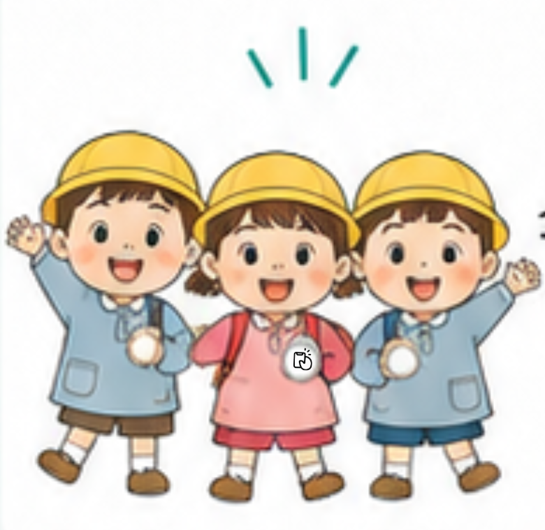
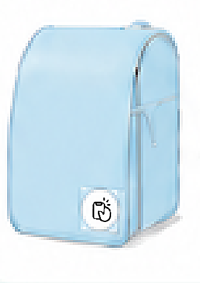
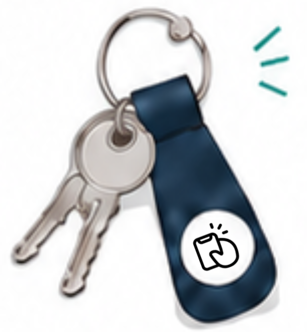
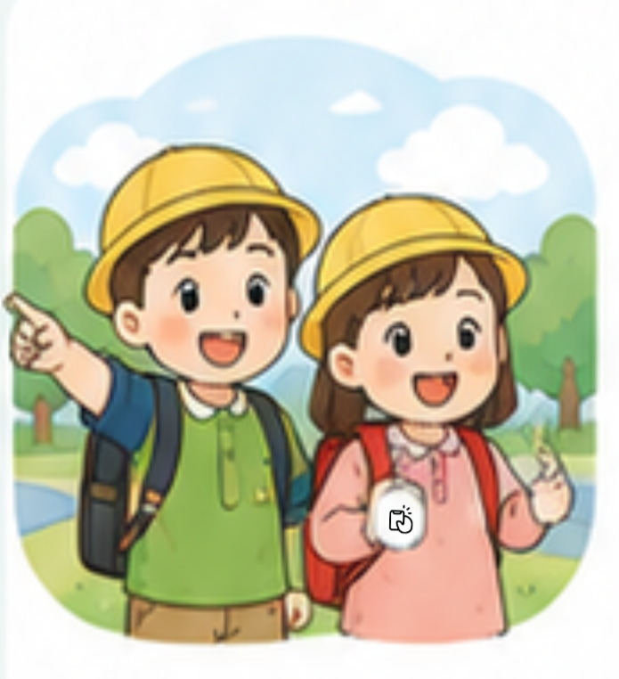
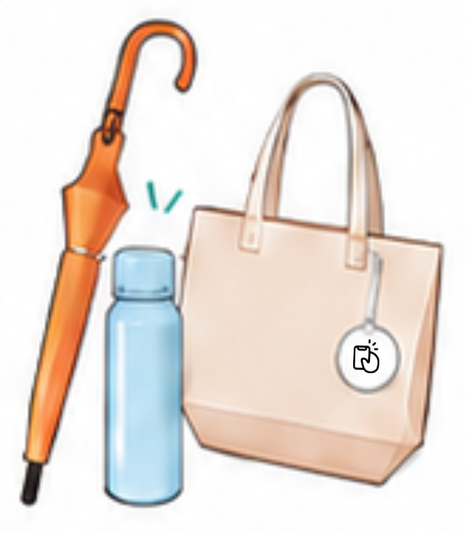
新入生への
入学記念品として
全園児・児童への
一斉配布として
ランドセルカバーへの
標準装備として
通学用
キーホルダーとして
校外学習・
修学旅行時の
見守り対策として
傘・水筒・バッグ
などの忘れ物
対策として
導入イメージ
配布物例
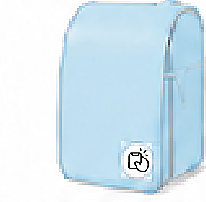
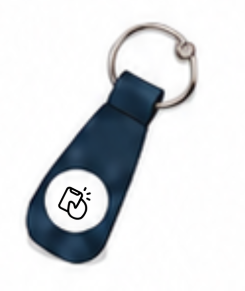
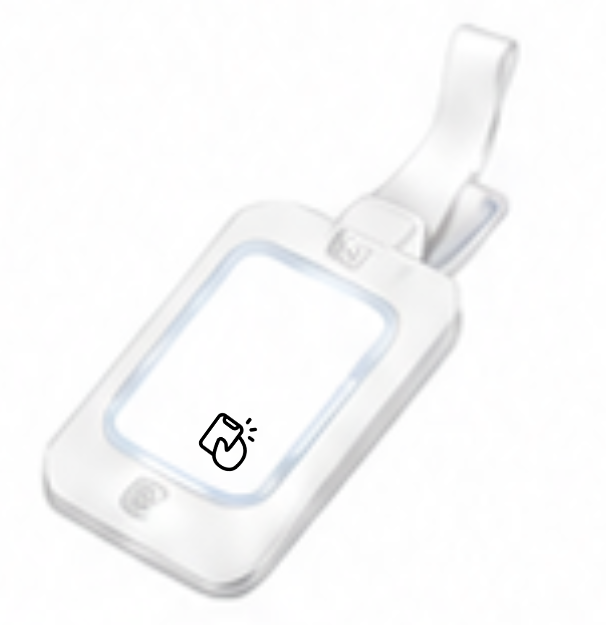
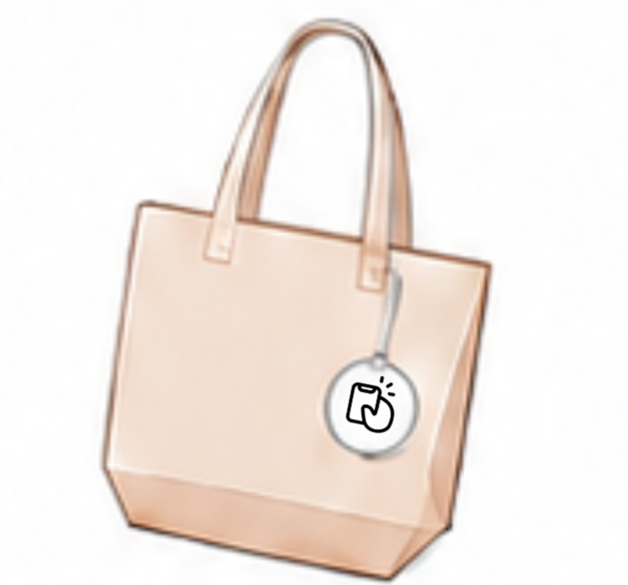
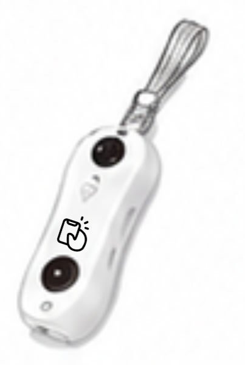
● ランドセルカバー
● キーホルダー
● ネームタグ
● 通学バッグ用
アクセサリー
● 防犯グッズ
サービス資料のご請求・ご相談はこちら
株式会社 SoundForest
担当：荒川雅子
TEL：042-404-2406
MAIL：contact@soundforest.life
公式サイト：https://tagppi.life/
まずはお気軽に
お問い合わせください